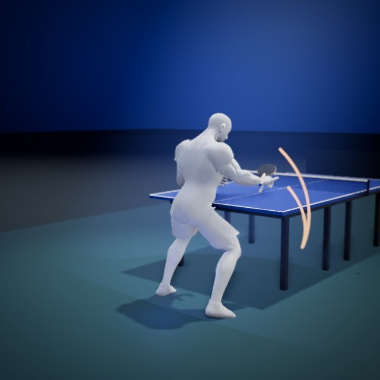
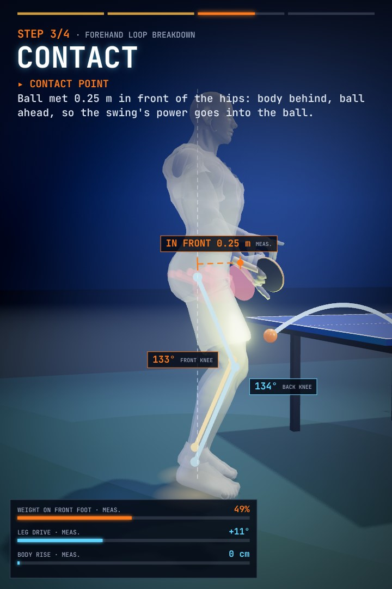
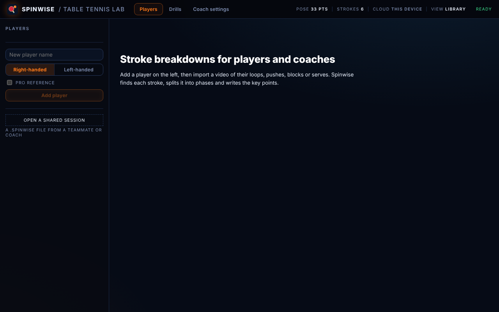

Spinwise finds every stroke in a table tennis video, splits it into phases, measures the body and tells you the one thing to change, with the drill that changes it.
Get Spinwise
Forehand and backhand loops, pushes, flicks, blocks and serves are found and labelled on their own.
Waist turn, knee bend, elbow, contact in front of the body, the finish and serve toss height, measured in 3D at each phase.
A clay athlete beside a regulation table replays the stroke step by step, with the bat path and weight transfer.
Each key point links to shadow play, multiball, Falkenberg or serve drills, plus exercises away from the table.
Tap the table corners once, then each bounce: on or off with the margin, short, mid or long, and ball speed.
Compare two strokes lined up at contact and follow each player across drill, robot, multiball and match sessions.
Everything runs on your laptop. Videos and players never leave the device.
Serves use the Toss instead of the Turn. Pushes, flicks and blocks get a short four-phase breakdown, because they are compact strokes.

Phone on a tripod behind your end of the table or side-on, whole body in the picture, 120 fps if the phone allows. Spinwise scores each clip and says what to change next time.

Not yet. Strokes come from the body's movement; bounces for placement are tapped by the coach.
Forehand loop, backhand loop, push, flick, block and serve. Anything mislabelled can be re-labelled in one click.
No. Analysis runs on your computer or in your browser tab.
This is an early version. The targets are starting points that a coach can tune in Coach settings.